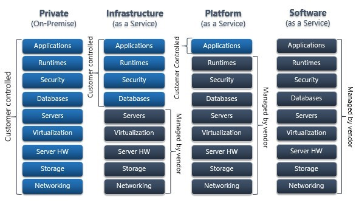
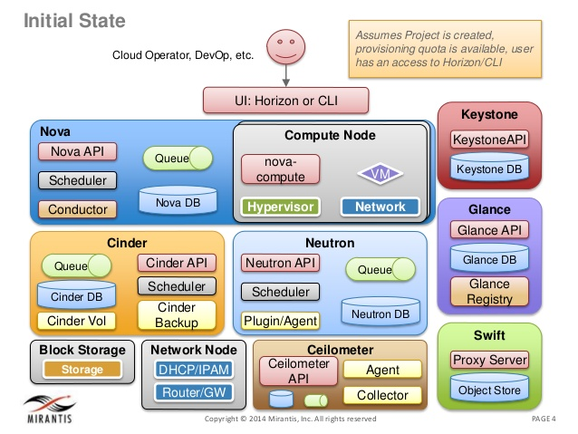
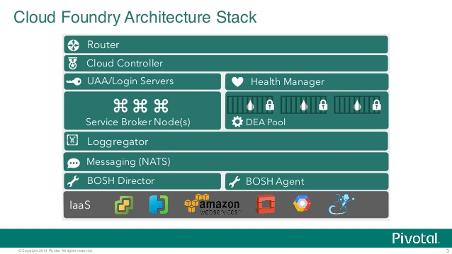
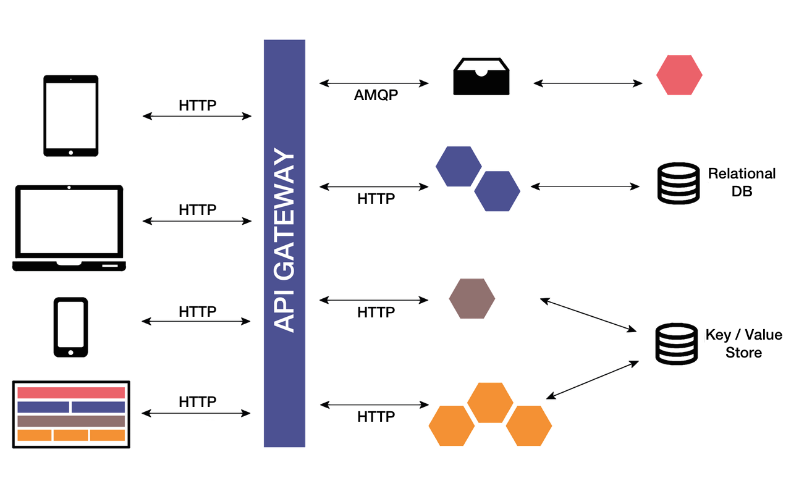

Who Am I ?
- IESA LUTHFY MALIEK
- Analyst Programmer / Software Developer
- +5yrs Experience
- Daily working: Java Enterprise - Mule ESB - Health Information System - Health & Finance System Integration - Health & BPJS Integration - Health & Aussie Medical Integration
- Interested with: AngularJS - Ionic Mobile Hybrid
- Co-Founder Sinau Academy sinauacademy.com https://www.facebook.com/groups/sinauacademy/
Agenda
- Software Development / Rekayasa Perangkat Lunak
- Software Development Architecture
- Software Development Role
- Open Source Tools & Programming Language
Software
- Apa itu software?
- Tujuan software?
- Siapa pembuat software?
- Siapa pengguna software?
Kategori Pembagian Software
- Sistem Operasi (Windows, Mac, Linux)
- Aplikasi siap pakai (word, browser, music player, draw)
- Utility (Anti virus, H/W driver)
- Bahasa Pemrograman
Jenis-Jenis Software
- Commercial
- Shareware (versi trial 30 hari)
- Free Software (GNU project, Richard Stallman)
- Open Source Software
- Malware (Software berbahaya)
SDLC - Tahapan Pembuatan Software
- Requirement
- Analisis dan Desain
- Implementasi / Ngoding + Unit Testing
- Testing
- Deploy / Pemasangan
- Maintenance / Software Support
Metodologi Pembuatan Software
- Waterfall
- RUP / Unified Process - Well documented
- Scrum - Less documented yang penting good quality
- Coboy - Yang penting jadi
Persepsi Keliru Pengembangan Software
- Semua dikerjakan programmer
- Kerjaannya cuma ngoding
- Kalo software-nya nggak jalan pasti salah programmer
Software nggak jalan salah programmer?
- Feature defect (Product Owner)
- Requirement defect (Bisnis Analis)
- Design defect (Sistem Analis)
- Functionality defect (Programmer / Tester / QA)
- Server / Environment problem (DevOps)
- Database problem (DBA)
- Networking & Infrastructure problem (ITS)
Software Development Role
- Programmer - Tukang ngoding
- Database Admin / DBA - Penjaga database
- Graphic / UI UX Designer - Memperindah user interface, mengatur estetika suatu tampilan
- Konsultan / Bisnis Analis - Membuat requirement dan mempresentasikannya ke sistem analis dan programmer
Software Development Role (2)
- Sistem Analis - Design & Team Leader, mendelegasikan task & bertanggung jawab pada keberhasilan development, seorang sistem analis biasanya merupakan programmer senior yang telah berpengalaman
- QA / Tester - Melakukan pengujian software, mencari kesalahan software, menentukan layak atau tidaknya fitur yang telah didevelop
Software Development Role (3)
- Tech Evangelist - Super coder / senior analis yang sudah berpengalaman, problem solver, memberikan saran teknologi untuk development, menguasai banyak teknologi
Software Development Role (4)
- Project Manager - Mengawasi jalannya development, mengatur komposisi tim, melakukan negosiasi dengan klien, dan menjadi penengah ketika tim bermasalah dengan klien
- DevOps - Menyiapkan infrastruktur yang digunakan saat development, membantu programmer saat menemui kendala pada infrastruktur
Software Development Role (5)
- IT Support - Mengatur dan mengamankan jaringan, maintenance hardware dan sistem operasi komputer
- Penetration Tester / Hacker - Mencari dan menguji celah keamanan software
Persiapan Ngoding
- Bahasa Pemrograman
- Database
- Version Control
- Backend / Frontend
- Mobile / Desktop / Web
Programming Languages

Backend
- C/C++
- Python
- Java
- C#
- Ruby
- PHP
- GOLang
- NodeJS
Frontend
- HTML + CSS
- JSP
- ASP
- PHP
- JavaScript - JQuery, AngularJS, ReactJS
- Native Mobile - Java Android, Obj-C iOS
- Hybrid Mobile - Ionic, Cordova, React Native
Memilih Bhs.Pemrograman
- Kuasai Frontend + Backend
- Banyak digunakan / banyak lowongan
- Banyak support / komunitas
- Tidak terikat platform / vendor tertentu
- Disupport berbagai technology (REST, HL7, dll)
- 1 bahasa untuk semua (desktop, web, mobile, cloud, dll)
Pilihan saya? Java + JavaScript
Database
- SQL - SQL Server, MySQL, PostgreSQL, Oracle
- NoSQL - MongoDB, Redis, Hadoop, Cassandra, CouchDB, ... fyuh banyak, sumber http://nosql-database.org
- Cloud NoSQL - AWS DynamoDB, Azure DocumentDB
Rekomendasi? pelajari MySQL/PostgreSQL, MongoDB, Redis
Ngoding Aja Nggak Cukup
- Coding harus dijaga riwayat perubahannya
- Disimpan ditempat aman supaya tidak rawan hilang
- Code juga harus di-share supaya dapat dikerjakan bersama-sama
Solusi? gunakan Version Control
Version Control
- CVS
- Subversion
- Microsoft TFS (bayar)
- Git - Ini yang paling populer
Git
- Local / On-Premise - Gitblit
- Cloud - Github, Bitbucket, Sourceforge, dll
Software Environment
- On-Premise / perangkat sendiri - Server, VM, VPS, dll
- Cloud
Cloud
IaaS - PaaS - SaaS

Mengapa Cloud?
- Instant & cepat
- Tidak perlu memiliki perangkat (hemat maintenance, listrik, mati lampu, dll)
- Mudah (scale-in, scale-out, scale-up, scale-down)
Cloud Open Source
OpenStack - IaaS

Cloud Open Source (2)
Cloud Foundry - PaaS

Arsitektur Software
Monolitik - MVC, MVVM, dll

Arsitektur Software (2)
Microservices

Kelebihan Microservices
- Language agnostic APIs - API tidak bergantung pada bahasa program
- Small building blocks - Pengembangannya dengan membangun blok-blok kecil
- Highly decoupled - Satu sama lain tidak saling ketergantungan
- Focused on doing small task - Fokus pada pekerjaan yang lebih spesifik
- Modular approach - Pendekatannya modular
Thx U... Happy Coding!!!